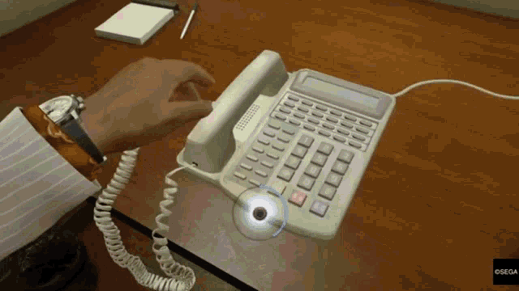

Web Usability

Web Usability is an important thing to consider and be knowledgable about when creating a website. You want to think to yourself as a user when designing a website and go, "What would look good here? Does this feel good to navigate around?". You also want to use techniques for styles of websites. For example a blog website will usually have 1 image accompanying a body of text for an entry. A wiki website will have a decent amount of images, and some hyperlink references for you to check out. You want to use multimedia elements when creating your website to make it feel alive. Some of these elements are text,images, videos, and more. The colour and size of your text and / or buttons are very important! Small sized text can be very hard to read, small sized buttons can cause miss clicks.
Images in multimedia

An image that was edited to look more pixelated than the original.
Images in multimedia are very important. As they are one of the core aspects of multimedia. They can assist web users to visually acknowledge something and convey a message. As the popular saying goes, "A picture is worth a thousand words". In multimedia there are 2 main types of images, BitMaps / raster images which is what is shown to the left, and vector drawn graphics. If the image shown was a vector drawn graphics I could stretch it to any resolution I wished and it would stay the same quality. But since it is a raster image the quality becomes lower if I change the resolution because raster images are a grid of pixels and dots making up the image. The program has to try its best to fill in the gaps when stretched to a higher resolution to make it look somewhat the original. Vector drawn graphics are those that are drawn in illustration programs such as adobe illustrator, they are usually drawn by an artist rather than an image taken by a camera. Because the vector drawn graphic is an original, it can be stretched to any resolution or shortened down. Vector images also take up much less space than compared to raster graphic images. Cartoons, anime, symbols, etc are usually vector drawn graphics. On the downside vector images cannot be used for photorealistic images, and sometimes may require a plugin to support web-based display. There is also a third wildcard category: 3-D images. These are 3 dimensional rendered and / or animated drawings. Usually video games support 3-D animations for character sprites, such as the Unreal Engine, or other various game engines. The features of 3-D modeling are: modeling, extruding, and lathing. Modeling is placing the elements onto the 3-D plane, extruding is the shape of a surface extends distance, and lathing is a profile of the shape is rotated around an axis. Panorama's are images that are stitched together in a sequence to form 1 large photo.
Audio and Sound in multimedia
An audio file of light rain.
Audio in media is also a pillar within multimedia. Sound is the vibrations in the air to create pressure that are perceived as what we hear. Sound wave vary in pressure level and in frequency / pitch. The pressure level (amplitude) controls how loud it is, the frequency controls the pitch of the sound. Sound pressure levels or volume is measured in decibels. Sound frequency is measured in Hertz Hz. Frequency is the number of cycles per second, and wave length is the distance between any 2 points in the same cycle. Humans can hear a maximum of 20,000hz and a minimum of 20hz. Ultrasonic is sound with a frequency above 20,000hz and infrasonic is below 20hz. Samples represent the amplitude of sound at a discrete point of time. The quality of digital recording depends on the sampling rate which is the number of samples taken per second and bit depth. Bit depth is how many bits represent the value of each sample. The more often you take a sample, the more data you store about that sample, the finer the resolution and quality of the captured sound will be when it is played. The quality of audio is based on the quality of the recording, not the device on which it will play on. Trimming an audio file is referred to removing dead space from the front and end of an audio recording. Format conversion is converting your audio file to a different file format for editing, data may be lost when converting formats. The higher the sound quality of a file, the larger the size it will be. MIDI audio is a communication standard developed early 1980s for electronic musical instruments and computers. It allows music and sound synthesizers from different manufacturers to communicate with each other. MIDI compared to digital audio is device dependent. MIDI is the best way to create original music, but they are also smaller than digital audio files in size. MIDI files are also more suited for web page embedding.
Animation
An animation of Tom chasing Jerry throughout the hallway.
An example of a 3D animation used in games (Yakuza 0, 2015), many of these are used during cutscenes when the player has no control. There are also many other animation during gameplay when the player DOES have control
Animation in multimedia is also an important aspect. Animation is the process of creating continuous motion and shape change illusion by showcasing a rapid display of a sequence of static images that minimally differ from the last. For example for a animation of Tom and Jerry chasing each other for 5 seconds, possibly tens or hundreds of frames of them chasing each other have had to been drawn to showcase it. Each frame would differ ever so slightly from the last to create a smooth animation, each frame slightly moving both of their legs by a few inches / pixels, eyes,mouths, arms, if they pass by an item in the background that item will have to be moved each frame to give the illusion that they are progressing towards a direction. If a lamp enters the frame from the right, it would move to the left each frame until it exits. Animations can be rendered in either 2D which are very simple and static, or 3D which are quite complicated and more realistic. Animation is possible because of persistence of vision. Images remain chemically mapped into the human eye for a brief moment of time. Still images are flashed in a sequence to produce the illusion of movement. The speed at which the image changes is called frame rate, a common acryonym regarding frame rate is " fps ". Film Movies are delivered at 24 fps, by national Televesion standards teleivision is aired at 30 fps, though some modern day TV's bypass this and results in a very strange viewing experience, as something that is supposed to be lower frame rate is being delivered in a frame rate double of what it is supposed to be. There are 2 animation techniques: Cel and Computer animation. Cel animation is a technique in which a series of progressively different graphics are used on each frame of movie film. The term " Cel " is derived from the clear celluoid sheets that were used for drawing each frame. Cel animation begins with keyframes, frames that are at the beginning and end of action are named keyframes. The process of filling in the action is called tweening. Computer animation is quite similar to cel animation, keyframe and tweening techniques are often used. However, the primary difference is in how much must be drawn by the animator, and how much is automatically generated by the animation software.
Film Making and Editing
A visual representation of 3 point lighting
Film making is a process that takes steps, and has principles to it. The steps to film making are
- Outline your idea
- Write out your script
- Story board each shot in the film (Decide what each is going to look like)
- Decide what you need for each scene
- Determine the setting of the scene (External or Internal?)
- Determine what props, make-up costumes, etc is going to be used
- Complete principle photography
- Edit the film and assemble the recorded clips
- pre-production
- production
- post-production
A good camera angle to practice is three-point lighting. It consists of three lights: a key light, fill light, and back light. The key light is the most focused and directional light. Creates the largest amount of light out of the three, and as a result creates the most obvious shadows. The fill light is used to offset the harshness and sharp shadows that can be caused by the key light. The back light provides a border / rim around the subject to set it off from the background. This is helpful for shooting portraits and close-ups, the back light can be placed slightly low on the vertical plane and angled upwards to provide a softer effect.
Some tips to frame your shots
- Put your subject where it belongs
- Use close-ups to capture emotion of characters
- Change camera angles to change the viewer's perspective
- Zoom
Post Production consists of film editing. Editing is the very core of the production process, the power of editing can help tell a much more meaningful
story. In film editing there are sequences, a collection of shots stitched together so that they flow. There are wide shots that can transition into close ups or
medium shots. Wide shots establish the setting, close-ups and mediums provide details not easy to see in wide shots. Even closer shots are used to showcase the emotions
through facial expressions from characters.
Other helpful things to keep in mind when editing is matched action. A matched cut is matched with an action. Screen direction is having moving objects going in the same
direction in each shot. The 180 degree rule: stay on one side of a moving object, then your screen direction will stay consistent. Controlling time consists of parallel actions,
slow motion, teleoporting through time, etc. All of these effects can be done through the editing process of an editing software in post production.